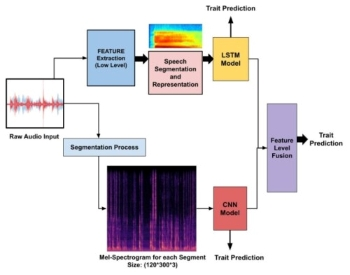

Deepak Kumar
Department of Computer Science and Engineering, Machine Vision Lab, Indian Institute of Technology, Roorkee
Mail Id: d_kumar@cs.iitr.ac.in
Mail Id: d_kumar@cs.iitr.ac.in
I am a Ph.D. student in the Computer Science and Engineering department at Indian Institute of technology, Roorkee. I have joined the Ph.D. in Dec, 2021 under supervision of Prof. Balasubramanian Raman. Before joining Ph.D., I have completed my master’s degree from Motilal Nehru National Institute of Technology, Allahabad.
News
- Dec 2022: A paper titled 'Speech-based Automatic Prediction of Interview Traits' got accepted in The 7th International Conference on Computer Vision and Image Processing (CVIP 2022), VNIT Nagpur, India.
- Dec 2021: Started pursuing Ph.D. at Machine Intelligence Lab, IIT Roorkee advised by Prof. R. Balasubramanian .
Education
Indian Institute of Technology, Roorkee, Uttarakhand, India
Ph.D.
Computer Science and Engineering
CGPA: 8.58
Supervisor: Prof. R. Balasubramanian
December 2021 - Present
Motilal Nehru National Institute of Technology, Allahabad, Prayagraj, India
M.Tech.
Computer Science and Engineering
CGPA: 8.25
Supervisor: Prof. Rajesh Tripathi
August 2014 - June 2016
Uttar Pradesh Technical University Lucknow
B.Tech.
Computer Science and Engineering
Work Experience
Assistant Professor under TEQIP-III (NPIU-MHRD)
College of Technology GBPUAT, Pantnagar Uttarakhand, India
October 2018 - December 2021
Assistant Professor
Teerthanker Mahaveer University, Moradabad, Uttar Pradesh, India
July 2016 - September 2018
Research Interesets
- Affective Computing and Cognitive Science
- Machine Learning and Deep Learning
- Multimodal Information Analysis
- Human Computer Interaction (HCI)
Publications
| 1. |  |
Deepak Kumar and Balasubramanian Raman. "Speech-based Automatic Prediction of Interview Traits." 7th IAPR International Conference on Computer Vision & Image Processing (CVIP 2022). [IAPR Endorsed ]
|
|
| 2. |  |
Surbhi Madan, Deepak Kumar and Anamika Agnihotri. "Privacy-Preserving Data Aggregation in Wireless Sensor." 2018 International Conference on System Modeling & Advancement in Research Trends (SMART 2018).
|
Achievements
- GATE qualified in 2013, 2014, 2015.
- UGC-NET qualified in Dec 2015, November 2017, July 2018.
Professional Membership
- Professional member of ACM (Association for computing Machinery)
- Associate member of IEI ( The Institution of Engineers (India) )
Contact
Room No: S-208, South Wing, ECE Building
Machine Vision Lab
Computer Science and Engineering Department, IIT Roorkee, Uttarakhand, India
Mail ID: d_kumar@cs.iitr.ac.in